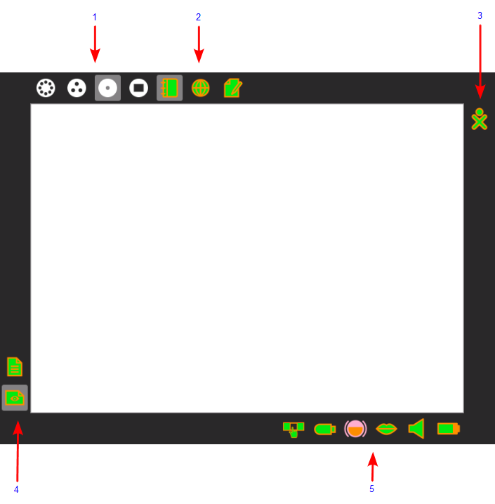

The Frame¶
The Frame is the black border around the screen that holds the View icons, Activity taskbar, clipboard, wireless connections, battery level, incoming invitations and notifications, buddies, and global information that is used across all views.
Accessing the Frame¶
You can access the frame from any view in 2 ways:
By using the Frame Key on the keyboard. On XO laptops the Frame key is the square icon on the upper right hand corner of your keyboard, on other laptops you can use the F6 key.
By moving the cursor to the edges or corners of your screen. (There are several options you can configure in this area, please refer to the My Settings section for more details.)
In the XO-4, with touch screen, you may show the frame by sliding a finger, from the top of the screen, a few centimeters downward. The same gesture will hide the frame too.
Frame Elements¶

The Frame view:
Zoom menu: The Zoom menu (icons matching the important keyboard shortcuts toward the keyboard top left) appears on the upper-left edge of the Frame. Use it to move between the four Sugar views: Neighborhood, Group, Home, and Activity.
Running Activity list: The sequence of currently started Activities appears on the top edge of the Frame in the order that they were started. The active Activity is highlighted. (The Journal always appears here first.) Here you can see open Activities, save, close or switch between them, and view their source code. Sometimes an unlabeled circle appears here which represents an additional full-screen session started by an Activity whose icon already appears in the top edge of the Frame or an Activity that is having trouble completely starting. Invitations to collaborative Activity sessions also show up on this portion of the Frame. They appear as icons in the color of the person who sent them. Hover and you can see who it is and join in.
Active buddy list: People you are currently collaborating with appear on the right edge of the Frame.
Clipboard: The left edge of the Frame serves as a clipboard. You can drag objects such as images and text to and from the clipboard, and from and to Activities. A hover menu also lets you remove them from the clipboard, open them in an Activity, or save (keep) them in your Journal.
System status (from left to right): Switch for the two modes of the touchpad (XO-1 only), external storage devices (e.g. thumb and hard drives), network status, text-to-speech, speaker (volume), and battery appear on the lower edge of the Frame.